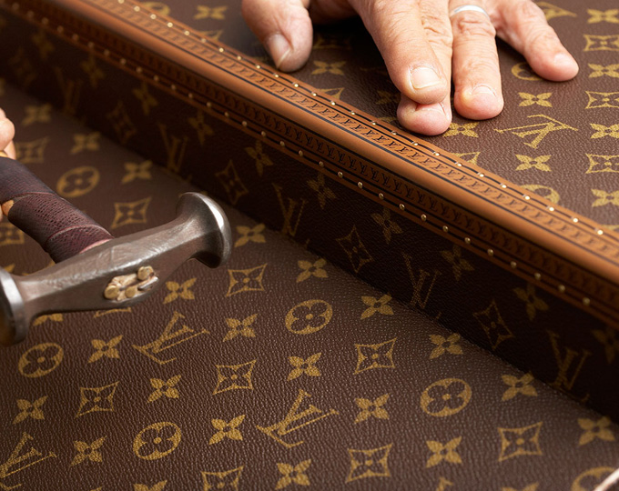

홈 > 브랜드 매거진 > 루이비통
루이비통
루이비통은 여행가방에서 출발했지만, 이동의 기능을 럭셔리한 삶의 상징으로 확장했다. 브랜드의 헤리티지는 물건을 담는 도구가 아니라 이동하는 사람의 취향과 지위를 표현하는 방식으로 발전했다.
산업 분야 패션·럭셔리 · 공개 등급 매거진 완성 · 브랜드 평가 5 ★


한눈에 보는 브랜드
루이비통은 여행가방에서 출발했지만, 이동의 기능을 럭셔리한 삶의 상징으로 확장했다. 브랜드의 헤리티지는 물건을 담는 도구가 아니라 이동하는 사람의 취향과 지위를 표현하는 방식으로 발전했다.
브랜드 관점
루이비통은 여행가방에서 출발했지만, 이동의 기능을 럭셔리한 삶의 상징으로 확장했다. 브랜드의 헤리티지는 물건을 담는 도구가 아니라 이동하는 사람의 취향과 지위를 표현하는 방식으로 발전했다.
시작과 성장
프랑스의 럭셔리 패션 브랜드인 루이비통은 1854년, 가방 제조사의 견습생이었던 루이 비통(Louis Vuitton)에 의해 설립되었다. 설립 초기 여행용 트렁크를 제작한 루이비통은 160여 년이 지난 지금 세계적인 패션 하우스로 자리 잡았다.
브랜드 아이덴티티
루이비통은 역사적 가치를 유지하기 위한 브랜딩 활동을 지속하고 있다. 모조품 생산을 막기 위해 고안한 모노그램은 루이비통의 상징이 되었으며, 루이비통의 첫 번째 작업장인 아니에르에서는 스페셜 오더 제품을 제작해 루이비통의 장인 정신을 계승하고 있다.
또한, 콜라보레이션 활동 및 갤러리 운영을 통해 패션과 예술의 협업을 선보이고 있다.
제품과 서비스
루이비통은 스페셜 오더 프로그램을 통해 단 하나뿐인 루이비통 제품을 제작하여 명품으로의 희소성을 유지하고 있다. 장인의 수작업으로 탄생한 루이비통 제품은 최상의 품질과 활용도 높은 디자인으로 대중적인 사랑을 받고 있다.
trunk, 손가방
현재 상태
타임라인
BI/CI 변천사
함께 읽을 브랜드
 패션·럭셔리 · 편집 검수샤넬
패션·럭셔리 · 편집 검수샤넬샤넬은 패션을 장식이 아니라 태도와 해방의 언어로 바꾼 브랜드다. 브랜드의 힘은 제품의 고급스러움뿐 아니라 여성의 몸과 생활 방식을 새롭게 해석한 상징성에서 나온다.
에르메스는 속도보다 장인성과 기다림의 가치를 브랜드 경험으로 만든다. 제품은 희소성과 품질을 통해 욕망을 만들지만, 더 깊은 차별성은 쉽게 대체되지 않는 제작 태도와...
 패션·럭셔리 · 매거진 완성코치
패션·럭셔리 · 매거진 완성코치코치는 실용적 가죽 제품을 일상적 럭셔리의 영역으로 끌어올린 브랜드다. 과시적 명품보다 접근 가능한 품질과 라이프스타일 이미지를 통해 오래 쓰는 가방의 감각을 브랜드...
 패션·럭셔리 · 매거진 완성티파니
패션·럭셔리 · 매거진 완성티파니티파니는 주얼리 자체만큼이나 색과 포장, 선물의 의식을 브랜드 자산으로 만든다. 블루 박스와 매장 경험은 제품을 구매하는 순간을 특별한 사건으로 바꾸며, 브랜드의 상...
 패션·럭셔리 · 매거진 완성프라다
패션·럭셔리 · 매거진 완성프라다프라다는 아름다움을 익숙한 화려함보다 지적인 긴장감으로 표현하는 브랜드다. 소재와 형태, 절제된 색감은 패션을 단순한 장식이 아니라 관찰과 해석의 대상으로 만든다.
 패션·럭셔리 · 편집 검수구찌
패션·럭셔리 · 편집 검수구찌구찌는 이탈리아의 패션·럭셔리 브랜드로, 소재, 실루엣, 로고, 컬렉션 운영이 취향과 지위 신호를 만드는 영역입니다.
 패션·럭셔리 · 매거진 완성몽블랑
패션·럭셔리 · 매거진 완성몽블랑몽블랑은 필기구를 기록의 도구에서 성취와 품격의 상징으로 끌어올린 브랜드다. 만년필은 기능 제품이지만, 브랜드가 축적한 이미지는 서명, 의사결정, 지적 권위 같은 장...
 패션·럭셔리 · 매거진 완성빅토리아 시크릿
패션·럭셔리 · 매거진 완성빅토리아 시크릿빅토리아 시크릿은 속옷을 기능적 제품이 아니라 무대화된 판타지와 자기표현의 이미지로 포장한 브랜드다. 브랜드는 제품보다 쇼, 모델, 시각적 연출을 통해 소비자가 상상...